A Vehicle Dynamics System
Many new vehicle features (like Electronic Stability Programs (ESP), indirect Tire Pressure Monitoring Systems (TPMS), road-tire friction monitoring systems, and so forth) rely on models of the underlying vehicle dynamics. The so-called bicycle vehicle model is a rather simple model structure that is frequently being used in the vehicle dynamics literature. In this demo we will start-off with this model structure and try to estimate the longitudinal and the lateral stiffness of a tire. The actual modeling work was originally carried out by Erik Narby in his MSc work at NIRA Dynamics AB, Sweden.
Contents
Vehicle Dynamics Modeling
The following figure illustrates the vehicle modeling situation to be considered.
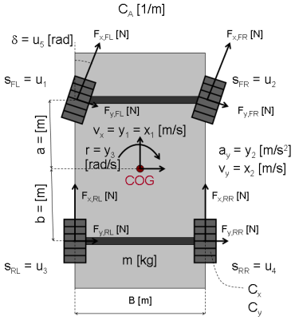
Figure 1: Schematic view of a vehicle dynamics system.
By the use of Newton's law of motion and some basic geometric relationships, the longitudinal velocity v_x(t), the lateral velocity v_y(t) and the yaw rate r(t) measured around the Center Of Gravity (COG) of the vehicle can be described by the following three differential equations:
d
-- v_x(t) = v_y(t)*r(t) + 1/m*( (F_x,FL(t)+F_x,FR(t))*cos(delta(t))
dt - (F_y,FL(t)+F_y,FR(t))*sin(delta(t))
+ F_x,RL(t)+F_x,RR(t)
- C_A*v_x(t)^2)
d
-- v_y(t) = -v_x(t)*r(t) + 1/m*( (F_x,FL(t)+F_x,FR(t))*sin(delta(t))
dt + (F_y,FL(t)+F_y,FR(t))*cos(delta(t))
+ F_y,RL(t)+F_y,RR(t))
d
-- r(t) = 1/J*( a*( (F_x,FL(t)+F_x,FR(t))*sin(delta(t))
dt + (F_y,FL(t)+F_y,FR(t))*cos(delta(t)))
- b*(F_y,RL(t)+F_y,RR(t)))where subscript x is used to denote that a force F acts in the longitudinal direction and y that it acts in the lateral direction. The abbreviations FL, FR, RL and RR label the tires: Front Left, Front Right, Rear Left and Rear Right, respectively. The first equation describing the longitudinal acceleration also contains an air resistance term that is assumed to be a quadratic function of the longitudinal vehicle velocity v_x(t). In addition, delta(t) (an input) is the steering angle, J a moment of inertia, and a and b the distances from the center of gravity to the front and rear axles, respectively.
Let us assume that the tire forces can be modeled through the following linear approximations:
F_x,i(t) = C_x*s_i(t)
F_y,i(t) = C_y*alpha_i(t) for i = {FL, FR, RL, RR}where C_x and C_y are the longitudinal and lateral tire stiffness, respectively. Here we have assumed that these stiffness parameters are the same for all 4 tires. s_i(t) is the so-called (longitudinal) slip of tire i and alpha_i(t) a tire slip angle. For a front-wheel driven vehicle (as considered here), the slips s_FL(t) and s_FR(t) are derived from the individual wheel speeds (measured) by assuming that the rear wheels do not show any slip (i.e., s_RL(t) = s_RR(t) = 0). Hence the slips are inputs to our model structure. For the front wheels, the tire slip angels alpha_Fj(t) can be approximated by (when v_x(t) > 0)
alpha_Fj(t) = delta(t) - arctan((v_y(t) + a*r(t))/v_x(t))
~ delta(t) - (v_y(t) + a*r(t))/v_x(t) for j = {L, R}For the rear wheels, the tire slip angels alpha_Rj(t) are similarly derived and computed as
alpha_Rj(t) = - arctan((v_y(t) - b*r(t))/v_x(t))
~ - (v_y(t) - b*r(t))/v_x(t) for j = {L, R}With J = 1/((0.5*(a+b))^2*m) we can next set up a state-space structure describing the vehicle dynamics. Introduce the states:
x1(t) = v_x(t) Longitudinal velocity [m/s]. x2(t) = v_y(t) Lateral velocity [m/s]. x3(t) = r(t) Yaw rate [rad/s].
the five measured or derived input signals
u1(t) = s_FL(t) Slip of Front Left tire [ratio]. u2(t) = s_FR(t) Slip of Front Right tire [ratio]. u3(t) = s_RL(t) Slip of Rear Left tire [ratio]. u4(t) = s_RR(t) Slip of Rear Right tire [ratio]. u5(t) = delta(t) Steering angle [rad].
and the model parameters:
m Mass of the vehicle [kg]. a Distance from front axle to COG [m]. b Distance from rear axle to COG [m]. Cx Longitudinal tire stiffness [N]. Cy Lateral tire stiffness [N/rad]. CA Air resistance coefficient [1/m].
The outputs of the system are the longitudinal vehicle velocity y1(t) = x1(t), the lateral vehicle acceleration (measured by an accelerometer):
y2(t) = a_y(t) = 1/m*( (F_x,FL(t)+F_x,FR(t))*cos(delta(t))
- (F_y,FL(t)+F_y,FR(t))*sin(delta(t))
+ F_x,RL(t)+F_x,RR(t))and the yaw rate y3(t) = r(t) (measured by a gyro).
Put together, we arrive at the following state-space model structure:
d
-- x1(t) = x2(t)*x3(t) + 1/m*( Cx*(u1(t)+u2(t))*cos(u5(t))
dt - 2*Cy*(u5(t)-(x2(t)+a*x3(t))/x1(t))*sin(u5(t))
+ Cx*(u3(t)+u4(t))
- CA*x1(t)^2) d
-- x2(t) = -x1(t)*x3(t) + 1/m*( Cx*(u1(t)+u2(t))*sin(u5(t))
dt + 2*Cy*(u5(t)-(x2(t)+a*x3(t))/x1(t))*cos(u5(t))
+ 2*Cy*(b*x3(t)-x2(t))/x1(t)) d
-- x3(t) = 1/((0.5*(a+b))^2)*m)*( a*( Cx*(u1(t)+u2(t)*sin(u5(t))
dt + 2*Cy*(u5(t) - (x2(t)+a*x3(t))/x1(t))*cos(u5(t)))
- 2*b*Cy*(b*x3(t)-x2(t))/x1(t)) y1(t) = x1(t)
y2(t) = 1/m*( Cx*(u1(t)+u2(t))*sin(u5(t))
+ 2*Cy*(u5(t)-(x2(t)+a*x3(t))/x1(t))*cos(u5(t))
+ 2*Cy*(b*x3(t)-x2(t))/x1(t))
y3(t) = x3(t)IDNLGREY Vehicle Model
As a basis for our vehicle identification experiments we first need to create an IDNLGREY model file describing these vehicle equations. Here we rely on C-MEX modeling and create a vehicle_c.c model file, in which NY is set to 3. The state and output update functions of vehicle_c.c, compute_dx and compute_y, are somewhat involved and includes several standard C-defined mathematical functions, like cos(.) and sin(.) as well as pow(.) for computing the power of its argument.
The state update function compute_dx returns dx (argument 1) and uses 3 input arguments: the state vector x, the input vector u, and the six scalar parameters encoded in p (t and auxvar of the template C-MEX model file have been removed here):
/* State equations. */
void compute_dx(double *dx, double *x, double *u, double **p)
{
/* Retrieve model parameters. */
double *m, *a, *b, *Cx, *Cy, *CA;
m = p[0]; /* Vehicle mass. */
a = p[1]; /* Distance from front axle to COG. */
b = p[2]; /* Distance from rear axle to COG. */
Cx = p[3]; /* Longitudinal tire stiffness. */
Cy = p[4]; /* Lateral tire stiffness. */
CA = p[5]; /* Air resistance coefficient. */ /* x[0]: Longitudinal vehicle velocity. */
/* x[1]: Lateral vehicle velocity. */
/* x[2]: Yaw rate. */
dx[0] = x[1]*x[2]+1/m[0]*(Cx[0]*(u[0]+u[1])*cos(u[4])
-2*Cy[0]*(u[4]-(x[1]+a[0]*x[2])/x[0])*sin(u[4])
+Cx[0]*(u[2]+u[3])-CA[0]*pow(x[0],2));
dx[1] = -x[0]*x[2]+1/m[0]*(Cx[0]*(u[0]+u[1])*sin(u[4])
+2*Cy[0]*(u[4]-(x[1]+a[0]*x[2])/x[0])*cos(u[4])
+2*Cy[0]*(b[0]*x[2]-x[1])/x[0]);
dx[2] = 1/(pow(((a[0]+b[0])/2),2)*m[0])
*(a[0]*(Cx[0]*(u[0]+u[1])*sin(u[4])
+2*Cy[0]*(u[4]-(x[1]+a[0]*x[2])/x[0])*cos(u[4]))
-2*b[0]*Cy[0]*(b[0]*x[2]-x[1])/x[0]);
}The output update function compute_y returns y (argument 1) and uses 3 input arguments: the state vector x, the input vector u, and five of the six parameters (the air resistance CA is not needed) encoded in p:
/* Output equations. */
void compute_y(double *y, double *x, double *u, double **p)
{
/* Retrieve model parameters. */
double *m = p[0]; /* Vehicle mass. */
double *a = p[1]; /* Distance from front axle to COG. */
double *b = p[2]; /* Distance from rear axle to COG. */
double *Cx = p[3]; /* Longitudinal tire stiffness. */
double *Cy = p[4]; /* Lateral tire stiffness. */ /* y[0]: Longitudinal vehicle velocity. */
/* y[1]: Lateral vehicle acceleration. */
/* y[2]: Yaw rate. */
y[0] = x[0];
y[1] = 1/m[0]*(Cx[0]*(u[0]+u[1])*sin(u[4])
+2*Cy[0]*(u[4]-(x[1]+a[0]*x[2])/x[0])*cos(u[4])
+2*Cy[0]*(b[0]*x[2]-x[1])/x[0]);
y[2] = x[2];
}Having a proper model structure file, the next step is to create an IDNLGREY object reflecting the modeling situation. For ease of bookkeeping, we also specify the names and units of the inputs and outputs.
FileName = 'vehicle_c'; % File describing the model structure. Order = [3 5 3]; % Model orders [ny nx nu]. Parameters = [1700; 1.5; 1.5; 1.5e5; 4e4; 0.5]; % Initial parameters. InitialStates = [1; 0; 0]; % Initial initial states. Ts = 0; % Time-continuous system. nlgr = idnlgrey(FileName, Order, Parameters, InitialStates, Ts, ... 'Name', 'Bicycle vehicle model', 'TimeUnit', 's', ... 'Display', 'on'); set(nlgr, 'InputName', {'Slip on front left tire'; ... % u(1). 'Slip on front right tire'; ... % u(2). 'Slip on rear left tire'; ... % u(3). 'Slip on rear right tire'; ... % u(4). 'Steering angle'}, ... % u(5). 'InputUnit', {'ratio'; 'ratio'; 'ratio'; 'ratio'; 'rad'}); set(nlgr, 'OutputName', {'Long. velocity'; ... % y(1); Longitudinal vehicle velocity 'Lat. accel.'; ... % y(2); Lateral vehicle acceleration 'Yaw rate'}, ... % y(3). 'OutputUnit', {'m/s'; 'm/s^2'; 'rad/s'});
The names and the units of the (initial) states and the model parameters are specified via SETINIT. We also use this command to specify that the first initial state (the longitudinal velocity) ought to be strictly positive for the model to be valid and to specify that all model parameters should be strictly positive. These constraints will subsequently be honored when performing initial state and/or model parameter estimation.
setinit(nlgr, 'Name', {'Longitudinal vehicle velocity' ... % x(1). 'Lateral vehicle velocity' ... % x(2). 'Yaw rate'}); ... % x(3). setinit(nlgr, 'Unit', {'m/s'; 'm/s'; 'rad/s'}); nlgr.InitialStates(1).Minimum = eps(0); % Longitudinal velocity > 0 for the model to be valid. setpar(nlgr, 'Name', {'Vehicle mass'; ... % m. 'Distance from front axle to COG'; ... % a 'Distance from rear axle to COG'; ... % b. 'Longitudinal tire stiffness'; ... % Cx. 'Lateral tire stiffness'; ... % Cy. 'Air resistance coefficient'}); ... % CA. setpar(nlgr, 'Unit', {'kg'; 'm'; 'm'; 'N'; 'N/rad'; '1/m'}); setpar(nlgr, 'Minimum', num2cell(eps(0)*ones(6, 1))); % All parameters > 0!
Four of the six parameters of this model structure can readily be obtained through the data sheet of the vehicle in question:
m = 1700 kg a = 1.5 m b = 1.5 m CA = 0.5 or 0.7 1/m (see below)
Hence we will not estimate these parameters:
nlgr.Parameters(1).Fixed = true; nlgr.Parameters(2).Fixed = true; nlgr.Parameters(3).Fixed = true; nlgr.Parameters(6).Fixed = true;
With this, a textual summary of the entered IDNLGREY model structure is obtained through PRESENT as follows.
present(nlgr);
Time-continuous nonlinear state-space model defined by 'vehicle_c' (MEX-file):
dx/dt = F(t, u(t), x(t), p1, ..., p6)
y(t) = H(t, u(t), x(t), p1, ..., p6) + e(t)
with 5 inputs, 3 states, 3 outputs, and 2 free parameters (out of 6).
Inputs:
u(1) Slip on front left tire(t) [ratio]
u(2) Slip on front right tire(t) [ratio]
u(3) Slip on rear left tire(t) [ratio]
u(4) Slip on rear right tire(t) [ratio]
u(5) Steering angle(t) [rad]
States: initial value
x(1) Longitudinal vehicle velocity(t) [m/s] xinit@exp1 1 (fix) in ]0, Inf]
x(2) Lateral vehicle velocity(t) [m/s] xinit@exp1 0 (fix) in [-Inf, Inf]
x(3) Yaw rate(t) [rad/s] xinit@exp1 0 (fix) in [-Inf, Inf]
Outputs:
y(1) Long. velocity(t) [m/s]
y(2) Lat. accel.(t) [m/s^2]
y(3) Yaw rate(t) [rad/s]
Parameters: value
p1 Vehicle mass [kg] 1700 (fix) in ]0, Inf]
p2 Distance from front axle to COG [m] 1.5 (fix) in ]0, Inf]
p3 Distance from rear axle to COG [m] 1.5 (fix) in ]0, Inf]
p4 Longitudinal tire stiffness [N] 150000 (est) in ]0, Inf]
p5 Lateral tire stiffness [N/rad] 40000 (est) in ]0, Inf]
p6 Air resistance coefficient [1/m] 0.5 (fix) in ]0, Inf]
Created: 29-Jun-2010 23:25:13
Last modified: 29-Jun-2010 23:25:14
Input-Output Data
At this point, we load the available input-output data. This file contains data from three different experiments:
A. Simulated data with high stiffness tires [y1 u1]. B. Simulated data with low stiffness tires [y2 u2]. C. Measured data from a Volvo V70 [y3 u3].
In all cases, the sampling interval Ts = 0.1 seconds.
load(fullfile(matlabroot, 'toolbox', 'ident', 'iddemos', 'data', 'vehicledata'));
A. System Identification Using Simulated High Tire Stiffness Data
In our first vehicle identification experiment we consider simulated high tire stiffness data. A copy of the model structure nlgr and an IDDATA object z1 reflecting this particular modeling situation is first created. The 5 input signals are stored in u1 and the 3 output signals in y1. The slip inputs (generated from the wheel speed signals) for the front wheels were chosen to be sinusoidal with a constant offset; the yaw rate was also sinusoidal but with a different amplitude and frequency. In reality, this is a somewhat artificial situation, because one rarely excites the vehicle so much in the lateral direction.
nlgr1 = nlgr; nlgr1.Name = 'Bicycle vehicle model with high tire stiffness'; z1 = iddata(y1, u1, 0.1, 'Name', 'Simulated high tire stiffness vehicle data'); set(z1, 'InputName', nlgr1.InputName, 'InputUnit', nlgr1.InputUnit); set(z1, 'OutputName', nlgr1.OutputName, 'OutputUnit', nlgr1.OutputUnit); set(z1, 'Tstart', 0, 'TimeUnit', 's');
The inputs and outputs are shown in two plot figures.
figure('Name', [z1.Name ': input data']); Pos = get(gcf,'Position'); set(gcf,'Position',[Pos(1), Pos(2)-Pos(4)/2, Pos(3), Pos(4)*1.5]); for i = 1:z1.Nu subplot(z1.Nu, 1, i); plot(z1(:, [], i)); title(['Input #' num2str(i) ': ' z1.InputName{i}]); xlabel(''); axis('tight'); end xlabel([z1.Domain ' (' z1.TimeUnit ')']);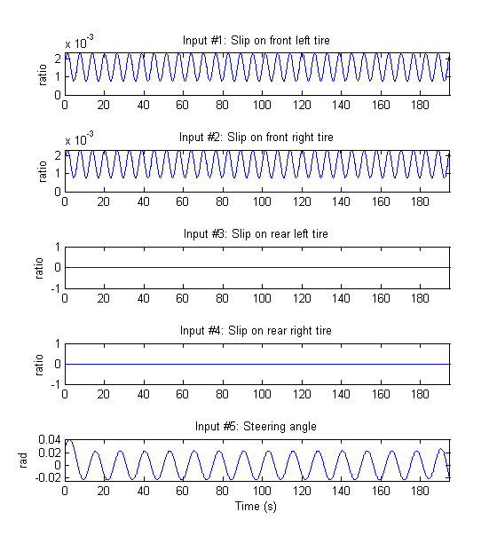
Figure 2: Inputs to a vehicle system with high tire stiffness.
figure('Name', [z1.Name ': output data']); for i = 1:z1.Ny subplot(z1.Ny, 1, i); plot(z1(:, i, [])); title(['Output #' num2str(i) ': ' z1.OutputName{i}]); xlabel(''); axis('tight'); end xlabel([z1.Domain ' (' z1.TimeUnit ')']);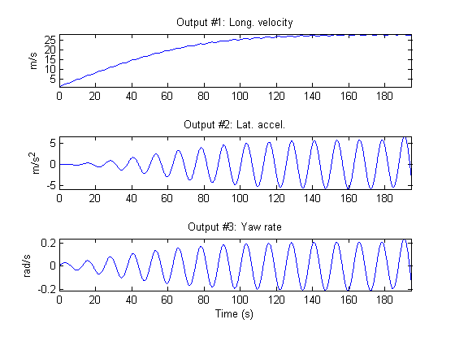
Figure 3: Outputs from a vehicle system with high tire stiffness.
The next step is to investigate the performance of the initial model and for this we perform a simulation. Notice that the initial state has been fixed to a non-zero value as the first state (the longitudinal vehicle velocity) is used as denominator in the model structure. A comparison between the true and the simulated outputs (with the initial model) is shown in a plot window.
figure; compare(z1, nlgr1, [], 'Init', 'model');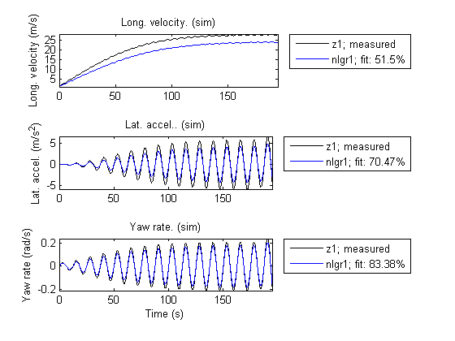
Figure 4: Comparison between true outputs and the simulated outputs of the initial vehicle model with high tire stiffness.
In order to improve the model fit, the two tire stiffness parameters Cx and Cy are next estimated, and a new simulation with the estimated model is carried out.
nlgr1 = pem(z1, nlgr1);
Criterion: Trace minimization
Scheme: Trust-Region Reflective Newton (LSQNONLIN, LargeScale = 'On')
--------------------------------------------------------------
Norm of First-order
Iteration Cost step optimality
--------------------------------------------------------------
0 4.85908 - -
1 4.85699 10 0.552
2 4.85282 20 0.552
3 4.84449 40 0.551
4 4.82785 80 0.55
5 4.79466 160 0.548
6 4.72868 320 0.544
7 4.59827 640 0.536
8 4.3436 1.28e+003 0.519
9 3.85861 2.56e+003 0.486
10 2.98357 5.12e+003 0.423
11 1.5953 1.02e+004 0.302
12 0.141179 2.05e+004 0.0845
13 0.00401766 1.02e+004 0.00208
14 0.00390491 312 3.97e-006
--------------------------------------------------------------
A comparison between the true and the simulated outputs (with the estimated model) is shown in a plot window.
figure; compare(z1, nlgr1, [], 'Init', 'model');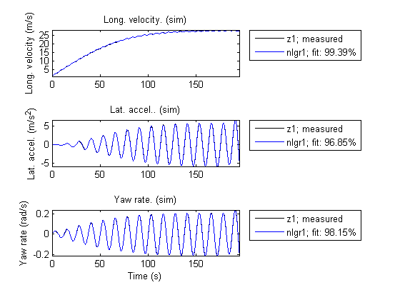
Figure 5: Comparison between true outputs and the simulated outputs of the estimated vehicle model with high tire stiffness.
The simulation performance of the estimated model is quite good. The estimated stiffness parameters are also close to the ones used in Simulink® to generate the true output data:
disp(' True Estimated'); fprintf('Longitudinal stiffness: %6.0f %6.0f\n', 2e5, nlgr1.Parameters(4).Value); fprintf('Lateral stiffness : %6.0f %6.0f\n', 5e4, nlgr1.Parameters(5).Value);
True Estimated Longitudinal stiffness: 200000 197944 Lateral stiffness : 50000 54724
B. System Identification Using Simulated Low Tire Stiffness Data
In the second experiment we repeat the modeling from the first experiment, but now with simulated low tire stiffness data.
nlgr2 = nlgr; nlgr2.Name = 'Bicycle vehicle model with low tire stiffness'; z2 = iddata(y2, u2, 0.1, 'Name', 'Simulated low tire stiffness vehicle data'); set(z2, 'InputName', nlgr2.InputName, 'InputUnit', nlgr2.InputUnit); set(z2, 'OutputName', nlgr2.OutputName, 'OutputUnit', nlgr2.OutputUnit); set(z2, 'Tstart', 0, 'TimeUnit', 's');
The inputs and outputs are shown in two plot figures.
figure('Name', [z2.Name ': input data']); Pos = get(gcf,'Position'); set(gcf,'Position',[Pos(1), Pos(2)-Pos(4)/2, Pos(3), Pos(4)*1.5]); for i = 1:z2.Nu subplot(z2.Nu, 1, i); plot(z2(:, [], i)); title(['Input #' num2str(i) ': ' z2.InputName{i}]); xlabel(''); axis('tight'); end xlabel([z2.Domain ' (' z2.TimeUnit ')']);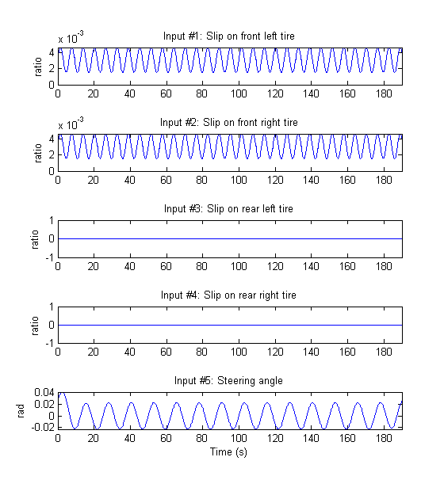
Figure 6: Inputs to a vehicle system with low tire stiffness.
figure('Name', [z2.Name ': output data']); for i = 1:z2.Ny subplot(z2.Ny, 1, i); plot(z2(:, i, [])); title(['Output #' num2str(i) ': ' z2.OutputName{i}]); xlabel(''); axis('tight'); end xlabel([z2.Domain ' (' z2.TimeUnit ')']);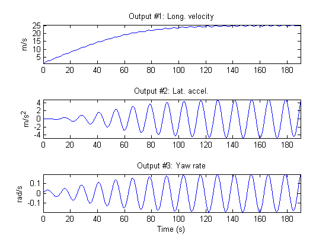
Figure 7: Outputs from a vehicle system with low tire stiffness.
Next we investigate the performance of the initial model (which has the same parameters as the initial high tire stiffness model). A comparison between the true and the simulated outputs (with the initial model) is shown in a plot window.
figure; compare(z2, nlgr2, [], 'Init', 'model');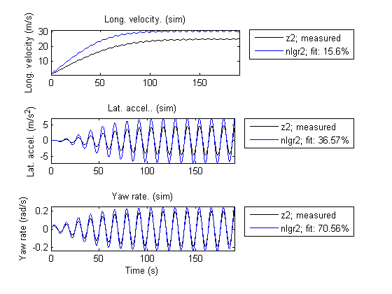
Figure 8: Comparison between true outputs and the simulated outputs of the initial vehicle model with low tire stiffness.
The two stiffness parameters are next estimated.
nlgr2 = pem(z2, nlgr2);
Criterion: Trace minimization
Scheme: Trust-Region Reflective Newton (LSQNONLIN, LargeScale = 'On')
--------------------------------------------------------------
Norm of First-order
Iteration Cost step optimality
--------------------------------------------------------------
0 11.922 - -
1 10.4845 10 1.36e+005
2 7.87391 20 1.15e+005
3 3.73349 40 7.62e+004
4 0.085672 74.1 1.02e+004
5 0.00657558 12.9 255
6 0.00651519 0.532 0.309
7 0.00651519 1.29 0.00521
--------------------------------------------------------------
A comparison between the true and the simulated outputs (with the estimated model) is shown in a plot window.
figure; compare(z2, nlgr2, [], 'Init', 'model');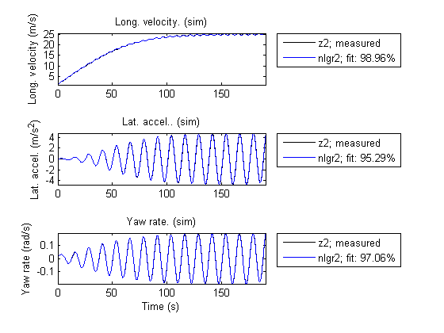
Figure 9: Comparison betweentrue outputs and the simulated outputs of the estimated vehicle model with low tire stiffness.
The simulation performance of the estimated model is again really good. Even with the same parameter starting point as was used in the high tire stiffness case, the estimated stiffness parameters are also here close to the ones used in Simulink to generate the true output data:
disp(' True Estimated'); fprintf('Longitudinal stiffness: %6.0f %6.0f\n', 1e5, nlgr2.Parameters(4).Value); fprintf('Lateral stiffness : %6.0f %6.0f\n', 2.5e4, nlgr2.Parameters(5).Value);
True Estimated Longitudinal stiffness: 100000 99372 Lateral stiffness : 25000 26384
C. System Identification Using Measured Volvo V70 Data
In the final experiment we consider data collected in a Volvo V70. As above, we make a copy of the generic vehicle model object nlgr and create a new IDDATA object containing the measured data. Here we have also increased the air resistance coefficient from 0.50 to 0.70 to better reflect the Volvo V70 situation.
nlgr3 = nlgr; nlgr3.Name = 'Volvo V70 vehicle model'; nlgr3.Parameters(6).Value = 0.70; % Use another initial CA for the Volvo data. z3 = iddata(y3, u3, 0.1, 'Name', 'Volvo V70 data'); set(z3, 'InputName', nlgr3.InputName, 'InputUnit', nlgr3.InputUnit); set(z3, 'OutputName', nlgr3.OutputName, 'OutputUnit', nlgr3.OutputUnit); set(z3, 'Tstart', 0, 'TimeUnit', 's');
The inputs and outputs are shown in two plot figures. As can be seen, the measured data is rather noisy.
figure('Name', [z3.Name ': input data']); Pos = get(gcf,'Position'); set(gcf,'Position',[Pos(1), Pos(2)-Pos(4)/2, Pos(3), Pos(4)*1.5]); for i = 1:z3.Nu subplot(z3.Nu, 1, i); plot(z3(:, [], i)); title(['Input #' num2str(i) ': ' z3.InputName{i}]); xlabel(''); axis('tight'); end xlabel([z3.Domain ' (' z3.TimeUnit ')']);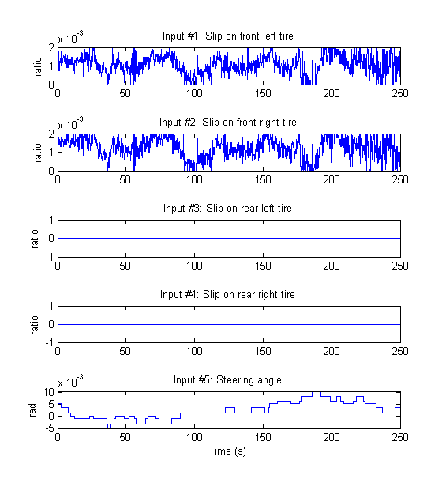
Figure 10: Measured inputs from a Volvo V70 vehicle.
figure('Name', [z3.Name ': output data']); for i = 1:z3.Ny subplot(z3.Ny, 1, i); plot(z3(:, i, [])); title(['Output #' num2str(i) ': ' z3.OutputName{i}]); xlabel(''); axis('tight'); end xlabel([z3.Domain ' (' z3.TimeUnit ')']);

Figure 11: Measured outputs from a Volvo V70 vehicle.
Next we investigate the performance of the initial model with the initial states being estimated. A comparison between the true and the simulated outputs (with the initial model) is shown in a plot window.
setinit(nlgr3, 'Value', {18.7; 0; 0}); % Initial initial states. figure; compare(z3, nlgr3);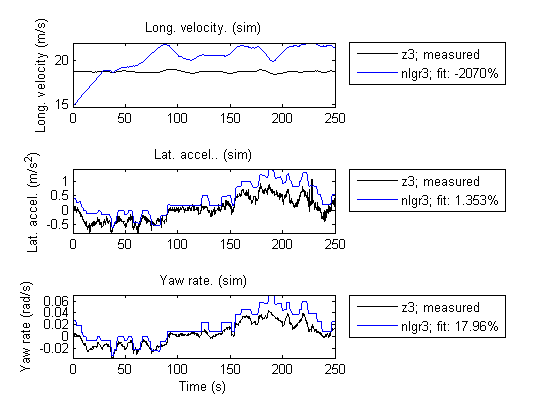
Figure 12: Comparison between measured outputs and the simulated outputs of the initial Volvo V70 vehicle model.
The tire stiffness parameters Cx and Cy are next estimated, in this case using the Levenberg-Marquardt search algorithm, whereupon a new simulation with the estimated model is performed. In addition, we here estimate the initial value of the longitudinal velocity, whereas the initial values of the lateral velocity and the yaw rate are kept fixed.
setinit(nlgr3, 'Fixed', {false; true; true}); nlgr3 = pem(z3, nlgr3, 'SearchMethod', 'LM');
Criterion: Trace minimization
Scheme: Levenberg-Marquardt line search
------------------------------------------------------------------------------------------
Norm of First-order Improvement (%)
Iteration Cost step optimality Expected Achieved Bisections
------------------------------------------------------------------------------------------
0 6.95235 - 1.16e+003 96.7 - -
1 0.275487 4.25e+004 43.1 96.7 96 0
2 0.241995 1.73e+004 1.5 12.2 12.2 0
3 0.24187 7.85e+003 0.167 0.0524 0.0515 0
4 0.241869 941 0.00151 0.000605 0.00059 0
------------------------------------------------------------------------------------------
A comparison between the true and the simulated outputs (with the estimated model) is shown in a plot window.
figure; compare(z3, nlgr3);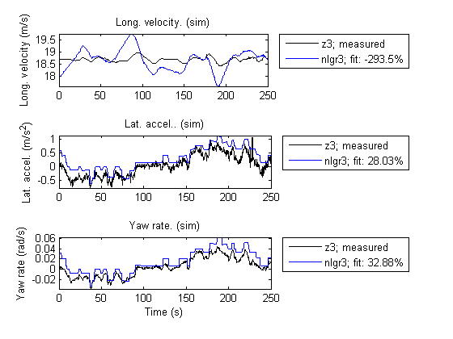
Figure 13: Comparison between measured outputs and the simulated outputs of the first estimated Volvo V70 vehicle model.
The estimated stiffness parameters of the final Volvo V70 model are reasonable, yet it is here unknown what their real values are.
disp(' Estimated'); fprintf('Longitudinal stiffness: %6.0f\n', nlgr3.Parameters(4).Value); fprintf('Lateral stiffness : %6.0f\n', nlgr3.Parameters(5).Value);
Estimated Longitudinal stiffness: 110437 Lateral stiffness : 72926
Further information about the estimated Volvo V70 vehicle model is obtained through PRESENT. It is here interesting to note that the uncertainty related to the estimated lateral tire stiffness is quite high (and significantly higher than for the longitudinal tire stiffness). This uncertainty originates partly from that the lateral acceleration is varied so little during the test drive.
present(nlgr3);
Time-continuous nonlinear state-space model defined by 'vehicle_c' (MEX-file):
dx/dt = F(t, u(t), x(t), p1, ..., p6)
y(t) = H(t, u(t), x(t), p1, ..., p6) + e(t)
with 5 inputs, 3 states, 3 outputs, and 2 free parameters (out of 6).
Inputs:
u(1) Slip on front left tire(t) [ratio]
u(2) Slip on front right tire(t) [ratio]
u(3) Slip on rear left tire(t) [ratio]
u(4) Slip on rear right tire(t) [ratio]
u(5) Steering angle(t) [rad]
States: initial value
x(1) Longitudinal vehicle velocity(t) [m/s] xinit@exp1 17.9123 (est) in ]0, Inf]
x(2) Lateral vehicle velocity(t) [m/s] xinit@exp1 0 (fix) in [-Inf, Inf]
x(3) Yaw rate(t) [rad/s] xinit@exp1 0 (fix) in [-Inf, Inf]
Outputs:
y(1) Long. velocity(t) [m/s]
y(2) Lat. accel.(t) [m/s^2]
y(3) Yaw rate(t) [rad/s]
Parameters: value standard dev
p1 Vehicle mass [kg] 1700 0 (fix) in ]0, Inf]
p2 Distance from front axle to COG [m] 1.5 0 (fix) in ]0, Inf]
p3 Distance from rear axle to COG [m] 1.5 0 (fix) in ]0, Inf]
p4 Longitudinal tire stiffness [N] 110437 172.833 (est) in ]0, Inf]
p5 Lateral tire stiffness [N/rad] 72926.3 9765.52 (est) in ]0, Inf]
p6 Air resistance coefficient [1/m] 0.7 0 (fix) in ]0, Inf]
The model was estimated from the data set 'Volvo V70 data', which
contains 2501 data samples.
Loss function 2.60172e-007 and Akaike's FPE 2.60588e-007
Created: 29-Jun-2010 23:25:13
Last modified: 29-Jun-2010 23:25:46
Concluding Remarks
Estimating the tire stiffness parameters is in practice a rather intricate problem. First, the approximations introduced in the model structure above are valid for a rather narrow operation region, and data during high accelerations, braking, etc., cannot be used. The stiffness also varies with the environmental condition, e.g., the surrounding temperature, the temperature in the tires and the road surface conditions, which are not accounted for in the used model structure. Secondly, the estimation of the stiffness parameters relies heavily on the driving style. When mostly going straight ahead as in the third identification experiment, it becomes hard to estimate the stiffness parameters (especially the lateral one), or put another way, the parameter uncertainties become rather high.
Additional Information
For more information on identification of dynamic systems with System Identification Toolbox™ visit the System Identification Toolbox product information page.